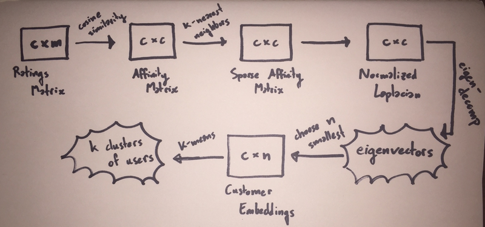
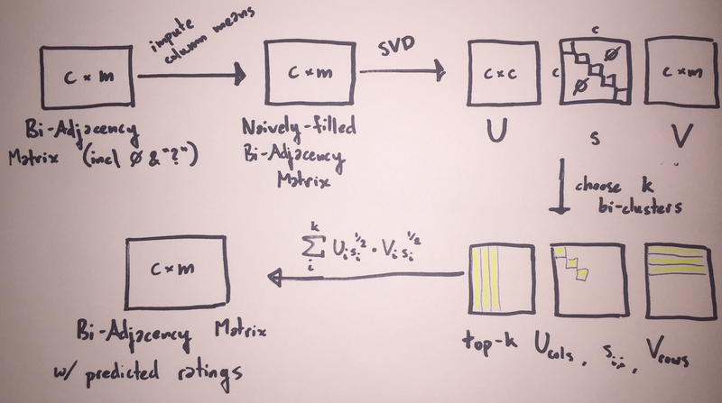

Report: ECS 271, Programming Assignment 1
Spectral Clustering
Overview:
With a spectral-clustering based recommendation system, the approach I
took was the one that most closely mirrored my intuition of how to
solve the problem: if we want to know how a particular user might rate
a particular movie, identify other users with similar tastes and find
out what they thought of that movie. To this end, I used
spectral-clustering to identify communities of Netflix users with
similar taste in movies. When answering the query, "What would user
x rate movie y?", the predicted rating is the arithmetic mean of
the ratings given for movie y by users in the same cluster as x.
Ratings of zero indicate members who have not seen movie y or not
rated it and are dropped before calculating the mean.

Technical Approach:
Splitting the Training Set. Though sklearn provides a
train_test_split function, I did not find it to be suitable for this
project based on a fundamental assumption: that approximately all
movies and customers represented in the testing data would also be
represented in the training data. The train_test_split function
provides no such guarantee. The given training data had enough
customers and movies with single digit representation with respect to
ratings that simple random sampling proved to be insufficient in
practice. Instead, I wrote my own splitting function.
This function calculates 10% of the count of each movie-id and customer-id in
the training set, uses a floor function on the result, and mandates
that no movie-id or customer-id can be present more than that number
of times in the test data. Using random sampling combined with this
check guarantees that all movies and customers in the testing data are
present in the training data while also yielding approximately a 90-10
split between testing and training data.
Constructing Customer Nodes: The Ratings Matrix. Each customer-id
is a node associated with a vector of movie ratings representing their
taste in film. Given c customer-ids and m movies, a c×m
sparse matrix R of movie-ratings is constructed that contains this
information. Therefore, the components of the ith row vector of R
are the m movie ratings associated with customer ci and the
components of the jth column vector of R are the c movie ratings
associated with movie mj.
Calculating Edge Weights: The Affinity Matrix. Each edge weight
between two customer nodes is intended to represent the level of
similarity between the movie tastes of those two customers. To this
end, the cosine-similarity between movie-rating vectors is used. The
resulting similarities are kept in a c×c affinity matrix W.
Therefore, if R[i] represents the ith row of R, we have:
Wi,j=∥Ri∥∥Rj∥Ri⋅RjIn which Wi,j represents the similarity between the movie tastes
of the two customers represented in rows i and j of matrix R.
Note that because the domain of ratings is strictly positive, all
vectors of customer ratings are in the same direction and, as a
result, cosine-similarity will give us similarity values strictly
between 0 and 1. Cosine-similarity is often used with positive
high-dimensional spaces like this one and also has the advantage of
being low-complexity for sparse vectors.
To yield the final affinity matrix, a k-nearest neighbors algorithm
is applied to W, thus removing noise and reducing the complexity of
calculating our clusters.
Finding Clusters: Hyper-parameter Tuning for Spectral Clustering.
In order to identify communities of individuals with similar movie
tastes, k-means clustering is applied to a projection of the graph of
customer nodes using the eigen-decomposition of the normalized graph
Laplacian. This equates to finding minimal normalized cuts in the
graph of customer nodes. Hyper-parameters include the number of
clusters (n_clusters), the number of eigenvectors used
(n_components), the number of iterations to use in the k-means
clustering (n_iter), and the number of nearest neighbors
(n_neighbors).
To get a general idea of the effect of hyper-parameter values, tuning
started with two rounds of very-coarse and naively-initiated searches
over different configurations of values for n_clusters,
n_components, and n_neighbors (n_iter was held constant at
10) with the goal of minimizing mean-squared error.
In the first round, n_clusters∈{15,20,25,30,35},
n_components∈{5,7,10}, and
n_neighbors∈{50,250,500,1000}, making for 60 total
configurations. Of these, the configuration yielding the lowest
mean-squared error used 15 clusters, 5 eigenvectors, and 1000 nearest
neighbors. In general, it appeared that fewer clusters, fewer
components, and more nearest neighbors was optimal.
In the second round, n_clusters∈{10,11,12,13,14},
n_components∈{3,5,7,10}, and
n_neighbors∈{250,500,1000}, again making for 60
total configurations. The conclusion from the first round appeared to
hold true: the configuration with the lowest mena-squared error used
10 clusters, 3 eigenvectors, and 500 nearest neighbors.
These two rounds of systematic testing gave a general direction within
the search-space; Further trial-and-error tuning eventually led to the
final choice of 5 clusters, 3 eigenvectors, and 750 nearest neighbors.
Matrix Completion
Overview:
With a matrix completion-based recommendation system, we start by
viewing the data as a bipartite graph G=(C,M,E) in which C is the set
of nodes representing customers, M is the set of nodes representing
movies, and E is the set of weighted edges
{(c,m,w)∣c∈C,m∈M,w∈{0,1,2,3,4,5}}
where the weight w is the rating
user u gave to movie v. We then consider a ∣C∣×∣M∣
bi-adjacency matrix A in which each row represents one user's
ratings, each column represents one movie's ratings, and Ai,j
represents a single user's rating of a single movie. In this context,
the problem becomes one of completing the missing entries in A.
Solutions to this problem are predicated on the assumption that A is
of low-rank. In this context, the assumption of low-rank equates to
the assumption that compared to the total number of movies and users,
the number of latent factors that influence a user's opinion of a
movie is small. In other words, the ratings of all users can be
expressed as a linear combination of the ratings of a small number of
prototypical users. In this assignment, I make use of the singular
value decomposition strategy for matrix completion.

Technical Approach:
Splitting the Training Set. See discussion above.
Constructing the Bipartite Graph: The Bi-Adjacency Matrix. This
process looks just like the one described above for the Customer Nodes
Ratings Matrix for Spectral Clustering with one addition; the test set
of blank ratings is included as well. This ultimately results in a
Bi-Adjacency Matrix in which Ai,j∈{0,1,2,3,4,5,?}.
Finding Bi-clusters: Hyper-parameter Tuning for Matrix Completion Before
performing the singular value decomposition, we fill in each element
in A that is a zero or a question mark with the arithmetic mean of
the other values in the column. This equates to filling in missing
ratings with the average of the existing ratings for that film.
A singular value decomposition is performed on this matrix, resulting
in a ∣C∣×∣C∣ matrix U, a ∣C∣×∣C∣ diagonal matrix
S, and a ∣C∣×∣M∣ matrix V. These matrices are then used
to construct a matrix of predicted ratings. For a given choice of k
bi-clusters, we then take the top k columns of U, the top k rows
of V, and the top k values of the diagonal matrix. Each of the
column and row vectors is scaled by the square root of its respective
value from s before ultimately taking a series of k outer-products
and summing them up! In the source code, this can be done cleverly
with a series of dot products.
With only a single value to tune with this strategy, the search space
was much easier to manage than with the spectral clustering solution.
I began by using the optimal number of clusters discovered above as a
base line, k=5. Variations in this quantity did not show any
appreciable difference; MSE trended slightly higher with a higher
value of k, but in order to avoid significantly overfitting the
model, I settled on k=6.